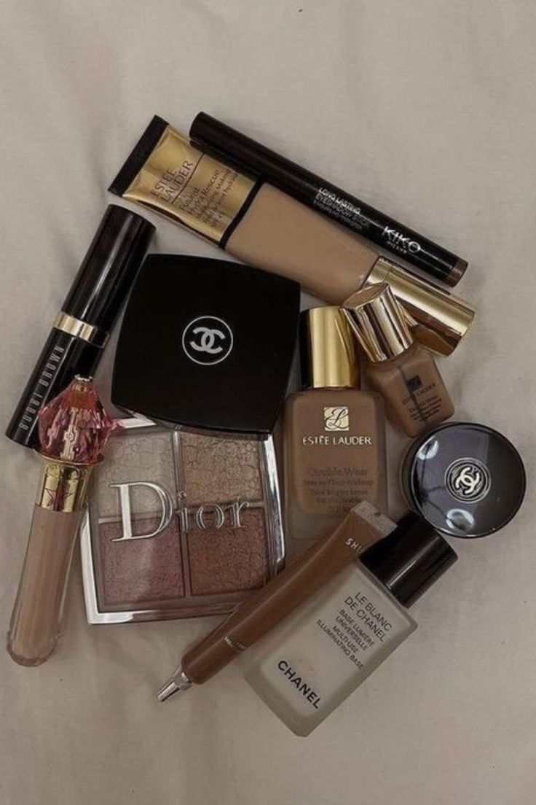
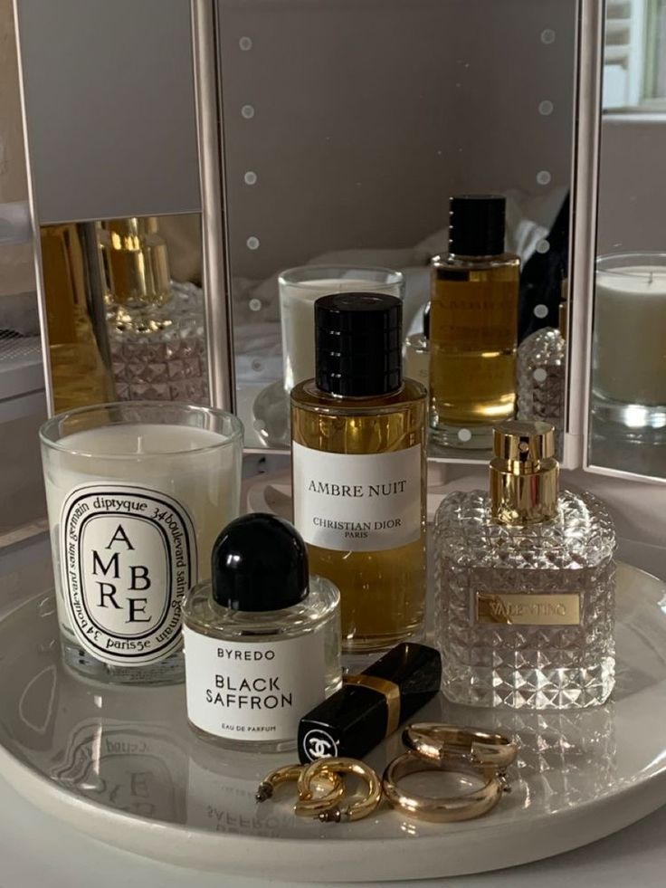

Explorează ultimele trenduri în îngrijirea pielii, machiaj și parfumuri sofisticate!

Secretele unui machiaj perfect
Machiajul perfect este mai mult decât o tehnică - este o artă care îți pune în valoare frumusețea naturală și îți oferă încrederea de care ai nevoie în fiecare zi. Cu pași simpli și produsele potrivite, îți poți crea un look impecabil care să dureze întreaga zi.
Îngrijirea pielii
Îngrijirea pielii este fundamentală pentru a menține un ten sănătos și luminos. O rutină corectă ajută nu doar la curățarea și hidratarea pielii, dar și la prevenirea semnelor de îmbătrânire. Este important să alegi produsele potrivite pentru tipul tău de ten și să le aplici corect pentru a obține cele mai bune rezultate.

Parfumuri rafinate
Alege parfumul care reflectă cel mai bine personalitatea și stilul tău. Fie că preferi note florale, lemnoase sau citrice, parfumul pe care îl alegi este un accesoriu esențial care îți completează imaginea și îți lasă o impresie de neuitat. Descoperă aroma care îți subliniază unicitatea și care te face să te simți încrezătoare și autentică.